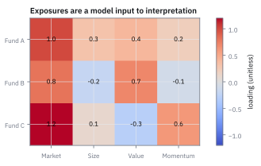
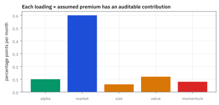
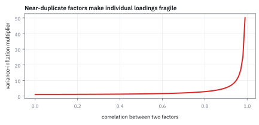
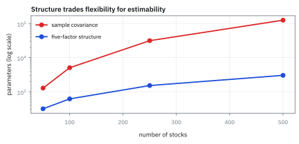

15.3 Multi-Factor Models
ให้หลายแรงผลักอธิบายผลตอบแทนก่อนตัดสินส่วนที่เหลือ
พอร์ตหนึ่งชนะดัชนี แต่ถือหุ้นเล็กและหุ้น value มากกว่า; หลังหัก exposure เหล่านั้นแล้ว ยังเหลือ skill อยู่หรือไม่?
เฉลย: multi-factor model ให้หลายแรงผลักอธิบาย return ก่อนตัดสินส่วนที่เหลือ. factor เยอะไม่ได้ทำให้ model ฉลาดขึ้น; ทุกตัวต้องมีเหตุผลและผ่านข้อมูลนอกตัวอย่าง.
ศัพท์ที่ใช้ในหัวข้อนี้
- multi-factor model
- model ที่อธิบาย excess return ด้วย factor returns หลายชุดและ loadings ของสินทรัพย์ ใช้แยก systematic exposures ออกจาก residual
- factor
- return series ที่แทน common source of variation ตามนิยามและ construction ที่กำหนด ใช้เป็น explanatory building block ของ model
- factor loading
- coefficient ที่บอก sensitivity ของ asset ต่อ factor หนึ่ง ใช้วัด exposure และสร้าง hedge หรือ attribution
- idiosyncratic risk
- ส่วน residual ที่ factor set ไม่อธิบาย ใช้เตือนว่าการเพิ่ม factors ไม่ได้ลบความไม่แน่นอนทั้งหมด
- multicollinearity
- สถานะที่ factors เคลื่อนคล้ายกันมากจน coefficients แยกกันไม่แม่น ใช้เป็นเหตุให้ตรวจ correlation และ uncertainty ก่อนตีความ loading
- factor premium
- average excess return ที่ factor construction รายงานใน period หนึ่ง ใช้เป็น model input ไม่ใช่ผลตอบแทนที่รับประกัน
- correlation
- ความเข้มของการเคลื่อนร่วมเชิงเส้นที่ปรับสเกลแล้ว ใช้ตรวจว่าปัจจัยซ้ำกันมากจน loading รายตัวไม่เสถียรหรือไม่
- covariance matrix
- ตาราง variance และ covariance ของ factor returns ใช้แปลง loading ของสินทรัพย์ให้เป็นความเสี่ยงร่วมของพอร์ต
- Arbitrage Pricing Theory (APT)
- ทฤษฎีตั้งราคาตามเงื่อนไขไร้ arbitrage ที่สรุปว่า expected return ต้องเป็นfunctionเส้นตรงของ factor loadings ใช้กำหนด fair return โดยไม่ต้องพึ่งพอร์ตตลาด
- shrinkage estimator
- เทคนิคดึง sample covariance matrix เข้าหา target เชิงโครงสร้างเพื่อลด estimation error ใช้ป้องกันน้ำหนักพอร์ตผันผวนรุนแรงเมื่อข้อมูลมีจำกัด
สัญลักษณ์ที่ใช้ในหัวข้อนี้
| สัญลักษณ์ | ความหมาย | หน่วย |
|---|---|---|
| $r_{i,t}$ | ผลตอบแทนส่วนเกินของสินทรัพย์ | decimal return ต่อเดือน |
| $f_{k,t}$ | ผลตอบแทนของ factor $k$ | decimal return ต่อเดือน |
| $K$ | จำนวน factors ที่กำหนดล่วงหน้า | factor count |
| $b_{i,k}$ | loading ของสินทรัพย์ $i$ ต่อ factor $k$ | unitless |
| $a_i$ | intercept หลังหัก factors | decimal return ต่อเดือน |
| $u_{i,t}$ | ส่วน residual ที่เหลือ | decimal return ต่อเดือน |
| $B$ | matrix ของ factor loadings ทุกสินทรัพย์ | unitless |
| $\Sigma_f$ | covariance matrix ของ factors | decimal-return-squared ต่อเดือน |
| $D$ | diagonal matrix ของ idiosyncratic variances | decimal-return-squared ต่อเดือน |
| $\Sigma$ | covariance matrix ของสินทรัพย์ที่ model สร้าง | decimal-return-squared ต่อเดือน |
ที่มาที่ไป: เมื่อปัจจัยเดียวอธิบายไม่พอ
หลังจากทฤษฎีปัจจัยเดียวถูกใช้มายี่สิบกว่าปี นักวิจัยเริ่มพบรูปแบบที่มันอธิบายไม่ได้อย่างเป็นระบบ
โดยเฉพาะหุ้นบริษัทเล็กและหุ้นที่ราคาถูกเมื่อเทียบกับมูลค่าทางบัญชี ให้ผลตอบแทนสูงกว่าที่ทฤษฎีบอกอย่างสม่ำเสมอ จนเรียกไม่ได้ว่าเป็นความบังเอิญ
Eugene Fama กับ Kenneth French เสนอในช่วงต้นทศวรรษ 1990 ให้เพิ่มปัจจัยเข้าไปอีกสองตัว เพื่อจับรูปแบบเหล่านั้น
ประโยชน์ที่ตามมามีมากกว่าการอธิบายผลตอบแทน เพราะแบบจำลองปัจจัยลดจำนวนตัวเลขที่ต้องประมาณ สำหรับตารางความเสี่ยงของหุ้นหลายร้อยตัว จากหลายหมื่นเหลือไม่กี่ร้อย
Worked Example — โจทย์และสิ่งที่ให้มา
โจทย์ให้อะไรมาบ้าง: เลือก market, size, value และ momentum factors ที่สร้างด้วย rules และ dates ที่ freeze แล้ว มิฉะนั้น loading เปลี่ยนความหมายตามหลังผลลัพธ์ แบบจำลองนี้เป็น attribution model; ไม่ได้พิสูจน์ว่า factor premium จะคงอยู่หรือมี causal mechanism
ขั้นที่ 1 — นิยามของสมการหลายแรงผลัก
บรรทัดนี้เป็น นิยาม ของแบบจำลองที่เราเลือกเขียน ไม่ใช่ผลที่พิสูจน์ แทนที่จะอธิบายผลตอบแทนด้วยตลาดอย่างเดียวแบบหัวข้อ 15.2 ขั้นนี้เปิดให้มีหลายแรงพร้อมกัน โดยแต่ละแรงมีน้ำหนักของตัวเอง การเลือกว่าจะใส่แรงอะไรบ้างเป็นการตัดสินใจ ไม่ใช่ข้อเท็จจริง และการใส่แรงเพิ่มย่อมทำให้อธิบายข้อมูลเก่าได้ดีขึ้นเสมอ ซึ่งเป็นกับดักที่หัวข้อ 15.5 เตือนไว้
returns และ residual เป็น decimal ต่อเดือน; loadings ทุกตัว unitless และแต่ละ product จึงมีหน่วย decimal return ต่อเดือน
ขั้นที่ 2 — expected attribution ภายใต้ factor assumptions
แยกผลตอบแทนที่คาดหวังออกเป็นส่วน ๆ ว่ามาจากแรงไหนเท่าไร และเหลือเป็นฝีมือจริงเท่าไร ห้าบรรทัดนี้ไม่มีอะไรมากกว่าการหาค่าเฉลี่ยของสมการเส้นตรง แต่ผลของมันคือเกณฑ์ที่ใช้ตัดสินว่าผู้จัดการกองทุนคนหนึ่งเก่งจริงหรือแค่รับความเสี่ยง
หาค่าเฉลี่ยทั้งสองข้างของสมการขั้นที่ 1 ใช้กฎบวกค่าเฉลี่ยของหัวข้อ 1.3 แล้วดึงน้ำหนักออกมา ทำได้เพราะน้ำหนักเป็นเลขที่ประมาณไว้แล้ว ไม่ได้สุ่มร่วมไปด้วย ส่วนความพลาดที่เหลือมีค่าเฉลี่ยศูนย์ เป็นผลบังคับจากวิธีประมาณในหัวข้อ 15.1
ผลที่ได้แยกผลตอบแทนที่คาดหวังเป็นสองส่วน คือส่วนที่มาจากการรับความเสี่ยงของแต่ละแรง กับส่วนที่เหลือซึ่งเรียกว่าฝีมือ
ข้อควรระวังที่สูตรไม่ได้บอก ส่วนที่เหลือจะเล็กลงเสมอเมื่อใส่แรงเพิ่ม เพราะแรงใหม่ดูดของเก่าไปได้ทุกครั้ง จึงต้องตรึงรายการแรงไว้ก่อนดูข้อมูล ไม่อย่างนั้นฝีมือจะหายไปได้ด้วยการเพิ่มคอลัมน์เฉย ๆ
ขั้นที่ 3 — พิสูจน์ทฤษฎี Arbitrage Pricing Theory (APT) จากเงื่อนไขไร้การเก็งกำไร
Stephen Ross พัฒนา Arbitrage Pricing Theory (APT) ขึ้นในปี 1976 เพื่อตอบคำถามว่า ทำไมผลตอบแทนที่คาดหวังต้องเป็นเส้นตรงกับ factor loadings
จุดแข็งของ APT คือไม่ต้องสมมติว่าผู้ลงทุนทุกคนเลือกพอร์ตตาม mean-variance เหมือน Capital Asset Pricing Model (CAPM) ขอเพียงตลาดไม่มีโอกาสทำกำไรไร้ความเสี่ยง (no-arbitrage)
เมื่อเราจัดพอร์ตที่ไม่ใช้เงินต้น และลบล้างความเสี่ยงจากทุก factor จนหมด พอร์ตขนาดใหญ่ที่กระจายน้ำหนักจะไม่มีความเสี่ยงเหลืออยู่เลย ผลตอบแทนจึงต้องเป็นศูนย์
สร้างพอร์ต arbitrage ที่ใช้เงินลงทุนสุทธิเป็นศูนย์ และมี exposure ต่อทุก factor เป็นศูนย์
ผลตอบแทนของพอร์ตจะเหลือเพียง expected value และผลรวมของ residual เท่านั้น
เมื่อจำนวนสินทรัพย์ $N$ มากขึ้น การกระจายน้ำหนักแบบ $1/N$ จะบีบให้ variance รวมของ residual ลู่เข้าสู่ศูนย์
ในตลาดที่ไม่มี arbitrage พอร์ตไร้ความเสี่ยงและไร้เงินต้นต้องให้ผลตอบแทนเป็นศูนย์ เงื่อนไขทางเรขาคณิตจึงบังคับว่า expected return ต้องอยู่ใน subspace ของ vector น้ำหนักและ loadings ส่งผลให้ความสัมพันธ์เป็นเส้นตรงพอดี
ขั้นที่ 4 — ตัวอย่าง transparent attribution
ผลตอบแทนคาดหวังคือ alpha บวกกับผลรวมของ exposure คูณผลตอบแทนของแต่ละ factor กางทีละ factor จะเห็นว่าตัวไหนออกแรงเท่าไร
market factor ออกแรงมากที่สุดที่ 0.60% เพราะทั้ง exposure และผลตอบแทนของมันใหญ่สุด สาม factor ที่เหลือรวมกันได้ 0.26%
alpha 0.10% คือส่วนที่ factor ทั้งสี่อธิบายไม่ได้ ซึ่งเป็นส่วนที่ต้องพิสูจน์ว่ามีจริง
ขั้นที่ 5 — จาก factor exposure ไปสู่ covariance ที่ใช้บริหารพอร์ต
ประโยชน์ที่ใหญ่กว่าการอธิบายผลตอบแทน คือมันลดจำนวนตัวเลขที่ต้องประมาณลงมหาศาล เจ็ดบรรทัดนี้ชี้ว่าการลดนั้นซื้อมาด้วยข้อสมมติสองข้อในบรรทัดที่ห้าและหก และหัวข้อ 17.8 จะกลับมาที่ราคาของข้อสมมติเหล่านี้
เขียนสมการของขั้นที่ 1 สำหรับหุ้นทุกตัวพร้อมกัน แล้วลบค่าเฉลี่ยออก พจน์คงที่หายไป จากนั้นใส่นิยามของ covariance matrix จากหัวข้อ 6.7 แล้วกระจายผลคูณ ได้สามก้อน คือก้อนแรง ก้อนที่เหลือ และพจน์ไขว้
ข้อสมมติสองข้อทำงานตรงนี้ ข้อแรกคือส่วนที่เหลือไม่เกี่ยวกับแรง พจน์ไขว้จึงหายไป ข้อที่สองคือส่วนที่เหลือของหุ้นสองตัวไม่เกี่ยวกัน ตารางของมันจึงมีค่าเฉพาะแนวทแยง
ประโยชน์อยู่ที่จำนวนตัวเลขที่ต้องประมาณ แทนที่จะต้องประมาณทุกคู่ของหุ้นห้าร้อยตัว ซึ่งมีกว่าแสนคู่ เราประมาณแค่น้ำหนักกับตารางของแรงไม่กี่ตัว
นั่นคือทั้งเหตุผลที่ factor model มีอยู่ ไม่ใช่เพราะมันจริงกว่า แต่เพราะข้อมูลที่มีไม่พอจะประมาณแสนคู่ได้
ขั้นที่ 6 — ตัวอย่างสองหุ้นคำนวณทุกช่อง
covariance ของสองหุ้นสร้างจากสองส่วน คือความเสี่ยงที่มาจาก factor ร่วมกัน บวกกับความเสี่ยงเฉพาะตัวที่ไม่เกี่ยวกัน
ช่องนอกแนวทแยงมาจาก $1.2\times0.8=0.96$ เท่านั้น เพราะ $D$ เป็นแนวทแยงล้วน ความเสี่ยงเฉพาะตัวจึงไม่สร้างการเคลื่อนไหวร่วม
นี่คือเหตุผลที่ factor model ลดจำนวนตัวเลขที่ต้องประมาณลงมาก: การเคลื่อนไหวร่วมทั้งหมดมาจาก exposure ไม่กี่ตัว
ทีละช่อง: $1.2\times1.2=1.44$, $1.2\times0.8=0.96$, $0.8\times0.8=0.64$ เอา variance ของ factor 1.00 มาคูณ บวก residual variance 2.25 กับ 4.00 ลงแนวทแยง correlation ที่แบบจำลองบอกคือ $0.96/\sqrt{3.69\times4.64}=0.96/4.138=0.232$
ขั้นที่ 7 — นับตัวเลขที่ต้องประมาณ: 500 หุ้น
ทำไมต้องอ้อมผ่าน factor ทั้งที่จะประมาณ covariance ตรง ๆ ก็ได้ ลองนับดูว่าแต่ละวิธีต้องประมาณกี่ตัวเลข
ตาราง covariance ของ 500 หุ้นมี 500 ช่องบนแนวทแยงและ 500×499/2 = 124,750 ช่องนอกแนวทแยง (ช่องซ้ำกันสองฝั่ง นับครั้งเดียว) รวม 125,250 ตัวเลข แต่ข้อมูลรายวันสิบปีมีแค่ 2,520 วัน ต่อหุ้น จึงประมาณไม่ไหว (หัวข้อ 8.x จะบอกว่า matrix แบบนี้ยัง ‘เกือบเอกฐาน’ ด้วย)
factor model ต้องการแค่ 5 loadings ต่อหุ้น 15 ตัวเลขใน covariance ของ factor และ 1 residual variance ต่อหุ้น รวม 3,015 น้อยกว่า 41 เท่า นี่คือเหตุผลเชิงปฏิบัติที่ทั้งอุตสาหกรรมใช้แบบจำลองนี้ ไม่ใช่เพราะมันจริงกว่า
ราคาที่จ่าย: ทุกการเคลื่อนไหวร่วมต้องผ่าน factor ทั้งห้า ถ้าหุ้นสองตัวในอุตสาหกรรมเดียวกันขยับด้วยกันด้วยเหตุผลที่ factor ไม่รู้จัก แบบจำลองจะบอกว่าไม่สัมพันธ์กัน
ขั้นที่ 8 — ทำไมต้องบีบโครงสร้าง: Ledoit–Wolf Shrinkage แก้วิกฤต Matrix ข้อมูลน้อย
ปัญหาใหญ่ที่สุดของการนำ covariance matrix ไปใช้จัดพอร์ตจริงคือ estimation error ตามที่ Ron Michaud ชี้ไว้ว่า mean-variance มักกลายเป็นเครื่องขยายความผิดพลาด
ถ้าเรามีหุ้น 500 ตัวแต่มีข้อมูลย้อนหลังเพียง 60 เดือน sample covariance จะมี rank ไม่เกิน 59 ทำให้ไม่สามารถหา inverse เพื่อคำนวณน้ำหนักพอร์ตได้เลย
Olivier Ledoit และ Michael Wolf จึงเสนอให้บีบ sample covariance เข้าหาโครงสร้าง factor model ช่วยให้ matrix กลับมามีเสถียรภาพและลงทุนได้จริง
เมื่อจำนวนงวดเวลา $T$ น้อยกว่าจำนวนสินทรัพย์ $N$ ตัว sample covariance estimator จะไม่เต็ม rank และไม่สามารถหา inverse ได้
โครงสร้างแบบจำลองหลายปัจจัย $F$ บังคับให้ความสัมพันธ์นอกแนวทแยงถูกขับเคลื่อนด้วย factor เท่านั้น จึงรับประกันความเป็น positive definite
การผสมแบบนูนระหว่าง $F$ กับ $S$ ด้วยค่าน้ำหนัก $\delta$ ช่วยลด variance ของ estimator ลงอย่างมหาศาล แลกกับ bias เล็กน้อย
ผลลัพธ์คือ inverse ของ matrix มีความเสถียร ไม่เกิดน้ำหนักพอร์ตสุดโต่งเหมือนการใช้ sample covariance เดี่ยว ๆ
แล้วเอาไปใช้ทำอะไรได้จริงบ้าง
การให้หลายปัจจัยช่วยอธิบาย ทำให้แยกฝีมือออกจากการรับความเสี่ยงได้ละเอียดขึ้น
ใช้ประเมินผู้จัดการกองทุนอย่างเป็นธรรม โดยหักผลของทุกปัจจัยที่ซื้อได้ถูก ๆ ออกก่อน
ใช้สร้างตารางความเสี่ยงของพอร์ตใหญ่ โดยลดจำนวนตัวเลขที่ต้องประมาณลงมหาศาล ซึ่งเป็นเหตุผลเชิงปฏิบัติที่สำคัญที่สุด
ใช้ออกแบบพอร์ตที่รับความเสี่ยงเฉพาะปัจจัยที่ต้องการ และตัดปัจจัยที่ไม่ต้องการออก
Figure 15.3a — factor loadings heatmap

heatmap เป็น exposures สมมติของสาม portfolios เพื่อสอนการอ่านเครื่องหมายและขนาด สีไม่ใช่ผลการประมาณจากตลาดสหรัฐฯ และไม่ควรใช้แทน regression report
Figure 15.3b — contribution ledger

สำหรับ Fund A ตัวอย่าง contributions รวม 1.08 percentage points ต่อเดือน แท่งแสดง arithmetic attribution ภายใต้ premiums ที่สมมติ ไม่ได้แสดง realized cumulative performance
Figure 15.3c — collinearity warning

เมื่อ factors สองตัวมี correlation ใกล้หนึ่ง model อาจ fit รวมได้ แต่แยก loading รายตัวไม่เสถียร เส้นนี้เป็น synthetic correlation sweep เพื่อชี้ uncertainty risk
Figure 15.3d — ลดภาระประมาณ covariance ด้วยโครงสร้าง factor

จำนวน covariance parameters แบบตรงโตตามกำลังสองของจำนวนหุ้น ขณะที่ factor model ห้าปัจจัยโตใกล้เส้นตรง ที่ 500 หุ้นลดจาก 125,250 เหลือ 3,015 parameters จึงช่วยให้ optimizer มี matrix ที่ใช้งานได้
สมมติฐานและ risk interpretation
model ต้อง freeze factor definitions, rebalance lag, currency, universe และ estimation window ก่อนวัด performance การใช้ diagonal $D$ สมมติ residual covariance ข้ามหุ้นเป็นศูนย์; หาก sector shock ยังหลงเหลือ matrix จะประเมิน portfolio risk ต่ำไป Loading จึงควรรายงานพร้อม standard errors, rolling stability และ scenario shocks ไม่ใช่แจกเป็นเลขทศนิยมไร้บริบท
คำตอบ ตรวจเอง และแปลว่าอะไร
คำตอบและความหมาย: กำหนด monthly premiums ของ market, size, value และ momentum เท่ากับ 0.60%, 0.20%, 0.30% และ 0.40%; loadings เท่ากับ 1.0, 0.3, 0.4 และ 0.2. Contributions จึงเป็น 0.60, 0.06, 0.12 และ 0.08 percentage points รวม factor contribution 0.86%. บวก intercept 0.10% ได้ expected excess return 0.96% หรือ 96,000 USD ต่อเดือนบน 10 ล้าน USD ก่อน costs; เปลี่ยน factor definitions แล้วเลขนี้เปลี่ยนได้
ตรวจเองใน 10 วินาที: 0.60+0.06+0.12+0.08 = 0.86 percentage points; บวก intercept 0.10% ต้องได้ 0.96%.
โค้ดตรวจ attribution และ covariance
import numpy as np
premium=np.array([.006,.002,.003,.004])
loading=np.array([1.0,.3,.4,.2])
alpha=.001
value=10_000_000
factor_contrib=loading*premium
expected=alpha+factor_contrib.sum()
B=np.array([[1.2],[.8]])
Sigma=B@np.array([[1.]])@B.T+np.diag([2.25,4.])
assert np.allclose(factor_contrib,[.006,.0006,.0012,.0008])
assert abs(expected-.0096)<1e-12
assert abs(expected*value-96_000)<1e-8
assert np.allclose(Sigma,[[3.69,.96],[.96,4.64]])โค้ดตรวจ contributions ราย factor, expected excess return 0.96%, ผลเงิน 96,000 USD และ covariance matrix สองหุ้น; การตรวจแบบนี้กันทั้งการบวกรวมผิดและการใส่ residual variance นอก diagonal
ก่อนไปต่อ — cointegration
factor model อธิบาย returns หลายสินทรัพย์ด้วย common drivers แต่ relative-value trade ต้องถามเพิ่มว่าระดับราคาสองเส้นมี equilibrium ร่วมกันหรือไม่ หัวข้อถัดไปจึงย้ายจาก cross-sectional exposure ไปสู่ time-series residual ที่ต้อง stationary ก่อนเดิมพันการกลับค่าเฉลี่ย
กับดัก: เพิ่ม factor จน residual เล็กแล้วประกาศ discovery
ทุก factor เพิ่ม degrees of freedom และโอกาส data mining กำหนด economic rationale, construction, lag, costs และ test period ก่อนดู result; model ที่มี factors มากอาจอธิบายอดีตเก่งแต่ไม่ทำนายอนาคต
ข้อจำกัด: วิธีนี้สมมติอะไร และของจริงเป็นอย่างไร
| เรื่อง | วิธีนี้สมมติว่า | ของจริงเป็นอย่างไร | ผลที่ตามมาเวลาใช้งาน |
|---|---|---|---|
| การเลือกปัจจัย | รู้ว่าปัจจัยไหนสำคัญ | ปัจจัยที่เผยแพร่กันมาจากการค้นหาในข้อมูลชุดเดิม ๆ | ปัจจัยจำนวนมากที่ตีพิมพ์แล้วใช้จริงไม่ได้ ซึ่งเชื่อมกับหัวข้อ 14.6 |
| ความคงที่ | ค่าความเกาะปัจจัยคงที่ | เปลี่ยนตามเวลา | ความเสี่ยงที่รายงานล้าหลังความจริงเสมอ |
| ส่วนที่เหลือ | ส่วนที่เหลือไม่เกี่ยวกัน | มักยังเกี่ยวกันอยู่ | ความเสี่ยงรวมของพอร์ตถูกประเมินต่ำเกินจริง เพราะนึกว่าส่วนที่เหลือหักล้างกันได้ |
แถวล่างเป็นข้อผิดพลาดที่ทำให้พอร์ตที่ดูกระจายดีแล้วยังขาดทุนพร้อมกันได้
สรุปที่ใช้ได้จริง
- factor loading คือ exposure ไม่ใช่คำตัดสิน performance
- alpha ใน multi-factor model ขึ้นกับ factor set ที่ freeze ไว้
- factor premiums เป็น assumptions ตาม horizon และ construction
- ตรวจ multicollinearity ก่อนแปล loading รายตัว